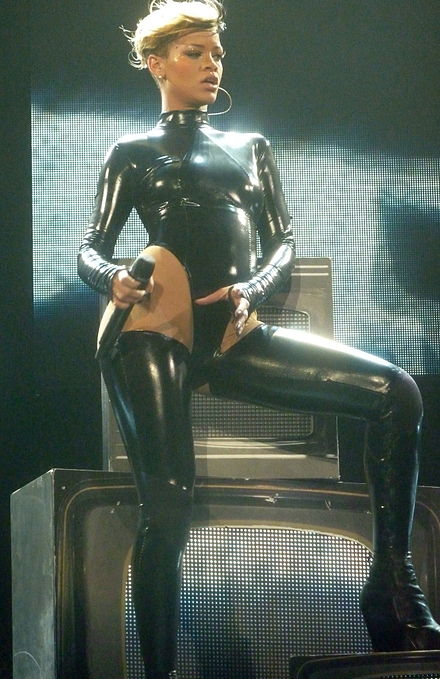
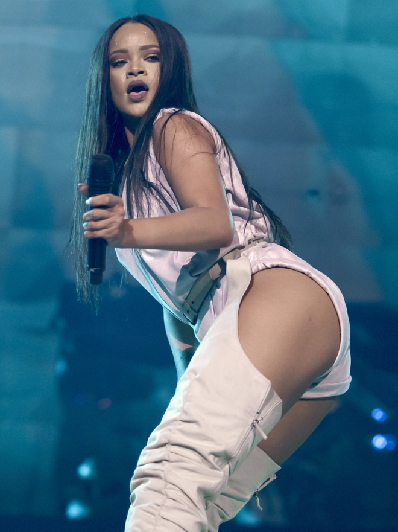

WORLD TOUR
RIRI
La cantante de Barbados Rihanna se ha embarcado en siete giras de conciertos, cinco de las cuales han sido por todo el mundo. Su debut en 2006, Rihanna: Live in Concert Tour se basó solo en América del Norte y apoyó su primer y segundo álbum de estudio, Music of the Sun (2005) y A Girl like Me (2006). La gira duró tres meses, a través de los cuales Rihanna realizó 36 shows. El mismo año, Rihanna continuó de gira como invitada especial en el PCD World Tour con Pussycat Dolls , Roc the Block Tour con Jay-Z y Ne-Yo , y el Monkey Business Tour con Black Eyed Peas . En el período de 2007 a 2009, actuó en la gira mundial Good Girl Gone Bad como apoyo a su tercer álbum de estudio con el mismo nombre . Durante la gira, Rihanna visitó Europa, América del Norte, Oceanía, Asia y África. Presentó a Rihanna presentando un estilo completamente diferente y vistiendo atuendos de cuero. La gira Good Girl Gone Bad provocó controversia en Malasia, donde el Partido Islámico Pan-Malayo recomendó que la gira de conciertos de Rihanna debería ser prohibida debido a sus atuendos provocativos. Un DVD, titulado Good Girl Gone Bad Live fue lanzado el 16 de junio de 2008. Presenta el espectáculo del Evening News Arena en Manchester , Inglaterra, que se llevó a cabo el 6 de diciembre de 2007.

En 2010 y 2011, Rihanna se embarcó en su segunda gira mundial Last Girl on Earth Tour para promover aún más su cuarto álbum de estudio Rated R (2009). Durante la gira, Rihanna realizó 67 espectáculos y visitó Europa, América del Norte, Asia y Australia. Simon Henwood fue un director creativo de la gira con el tema de los sueños y pesadillas de Rihanna, presentándola como la última humana viva. Durante la gira, el guitarrista de Extreme , Nuno Bettencourt , se unió a la banda de Rihanna. Last Girl on Earth Tour contó con varios actos de apertura, incluidos los cantantes estadounidenses Kesha y Travie McCoy para la etapa norteamericana de la gira, Pixie Lott para los espectáculos del Reino Unido, mientras que el DJ escocés Calvin Harris abrió los espectáculos desde la etapa australiana. La gira recibió críticas predominantemente positivas de los críticos, con Neil McCormick de Daily Telegraph elogiando su vestuario, rutinas de baile y pantallas.
Antecedentes
A finales de 2010, Rihanna lanzó su quinto álbum de estudio, Loud . Para promover aún más su material, Rihanna se embarcó en su cuarta gira de conciertos, el Loud Tour , en junio de 2011, habiéndolo anunciado el 9 de febrero de 2011. La gira comprendió 98 fechas de espectáculos, 33 en América del Norte, 4 en América del Sur. y 61 en Europa. El escenario del concierto contó con secciones separadas donde el público tuvo la oportunidad de estar en el espectáculo. Originalmente, J. Cole y Cee Lo Green fueron planeados como actos de apoyo para el tramo norteamericano. Sin embargo, Green abandonó la gira citando conflictos de horarios. Calvin Harris apareció como telonero de la etapa europea de la gira. La gira fue recibida positivamente por los críticos, que elogiaron la voz y los movimientos de baile de Rihanna. Presentaba a Rihanna dando un baile erótico a un fan que ella eligió de la audiencia, durante la presentación de " Skin ". Según Pollstar, la gira recaudó $ 90 millones en todo el mundo y se convirtió en la séptima gira más taquillera de 2011. [18] En 2008, Rihanna también realizó una serie de conciertos benéficos titulados A Girl's Night Out , en beneficio de la "Fundación Believe". . La quinta gira de conciertos de Rihanna, Diamonds World Tour fue en apoyo de su séptimo álbum de estudio Unapologetic y se convirtió en la gira de mayor recaudación de Rihanna, superando su gira Loud en 2011. Constaba de 96 conciertos y visitó América del Norte, África, Europa y Oceanía. . Rihanna también se embarcó en una mini gira co-encabezada con Eminem en 2014. La gira de conciertos más reciente de Rihanna con el apoyo de Travis Scott - Anti World Tour se llevó a cabo a lo largo de 2016 en apoyo de su octavo álbum de estudio Anti

¿Viviste la experiencia de su primer Tour como solista? ¿Si lo viste virtual, que te parecio el espectaculo?
¿Cual fue la interpretacion con los invitados especiales que mas te gusto?
¿Esperas con ansias vivir otra era con RIHANNA?